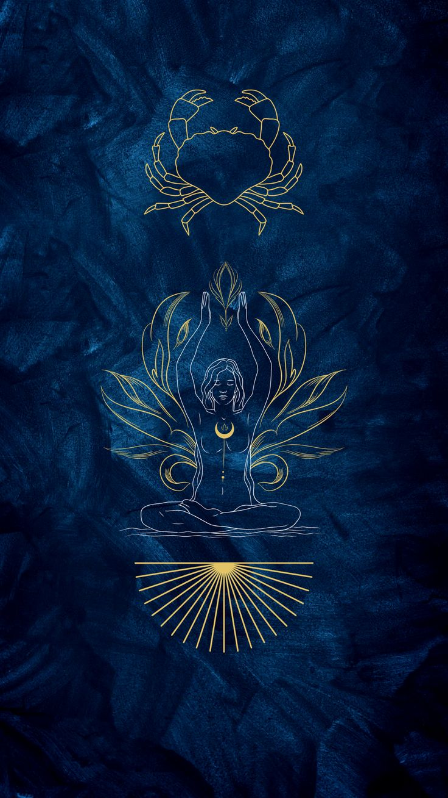

Yengeç
22 Haziran – 22 Temmuz · Element: Su · Yönetici: Ay

Genel Profil
Yengeç; koruyucu, duyarlı ve aidiyet odaklıdır. Sevdiklerine sahip çıkar.
Duygusal iniş-çıkışlarda kabuğuna çekilebilir; güvenli alanını doğru kurması iyi gelir.
Güçlü Yönler
- Şefkat
- Sadakat
- Sezgi
- Koruyuculuk
Zorlayıcı Yönler
- Alınganlık
- Geçmişe takılma
- İçe kapanma
- Kaygı
Aşk
Güven ve bağlılık ister; duygusal sıcaklık ilişkiyi büyütür.
Kariyer
Bakım/sağlık, eğitim, psikoloji, İK, yemek ve hizmet alanları.
İpucu
Bugün “ihtiyacım olan şey…” diye net bir cümle kur.